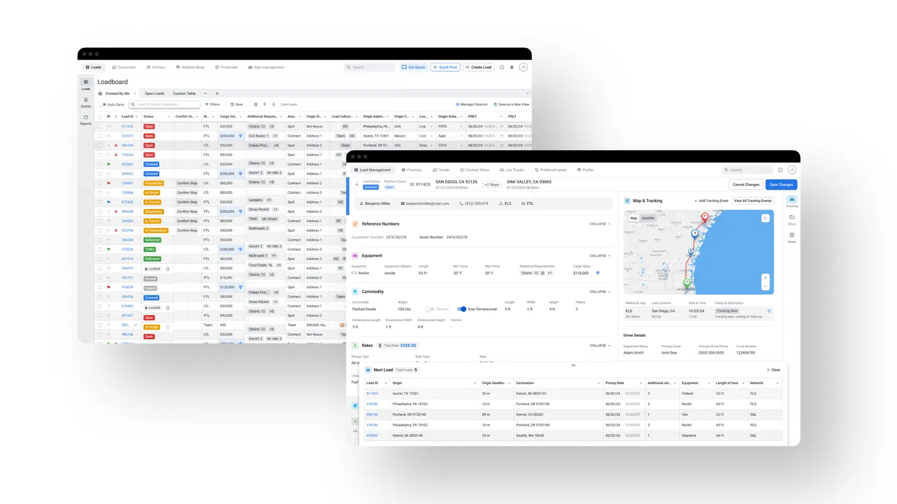
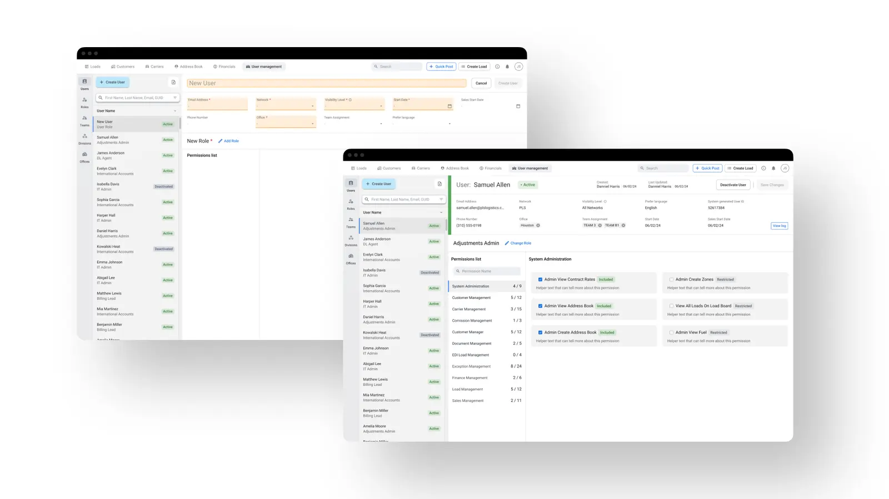
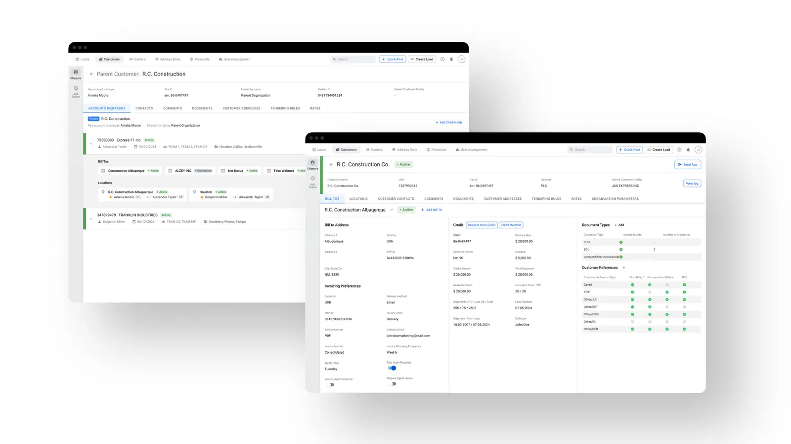
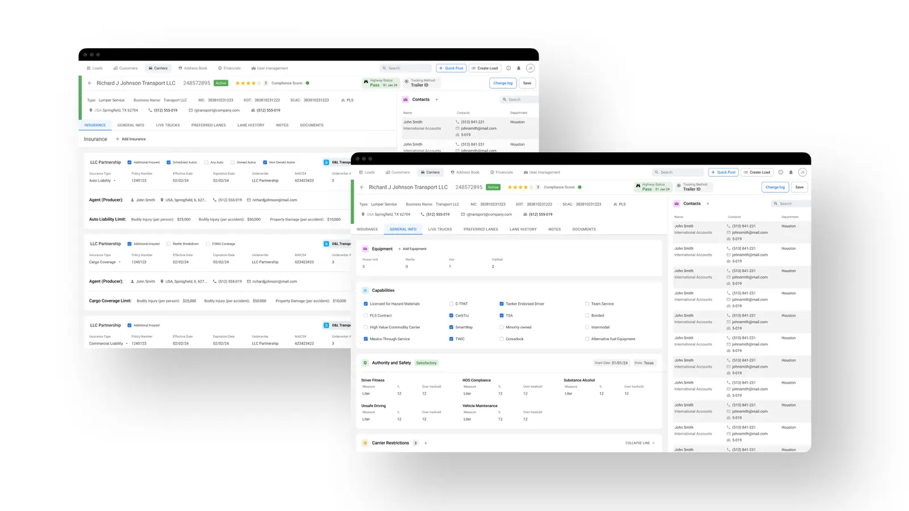

Logistics · UX/UI Design
Logistic Service
A scalable logistics management system designed for usability, clarity and operational efficiency across mobile and web.

Process
The work began with requirement analysis translated into early prototypes, focused on defining core structures — navigation, system controls, and status visualization — to build a functional, scalable foundation from day one.
Design System
A modular system of reusable, interconnected components kept the platform consistent while staying flexible across different contexts and workflows — from micro-interactions to complex system-level flows.
Loadboard
A core module built for fast scanning and analysis of freight loads. The interface emphasizes clarity, filtering, and customization, letting users build personalized dashboards around their own operational needs.
User Management
An administrative module for managing platform users, access levels and permissions — structured role definitions and activity tracking that keep the system accountable and secure.
Shipper / Customer Profile
A structured customer management system for shipping profiles — billing data, preferences, contacts, credit limits and account ownership — with streamlined onboarding so sales teams can start a relationship with minimal data and reach first shipment faster.
Carrier Profile
A dedicated interface for carrier and vendor data — compliance, billing and relationship information — keeping key operational data accessible across different brokerage workflows.




Result
The final system gives logistics teams a scalable foundation — improving clarity, operational speed and usability across every user role, from dispatch to enterprise account management.
More cases